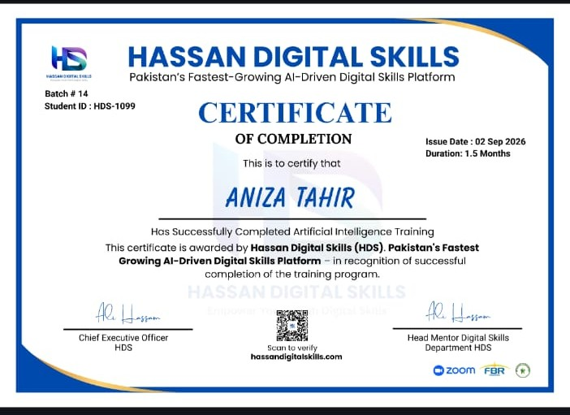
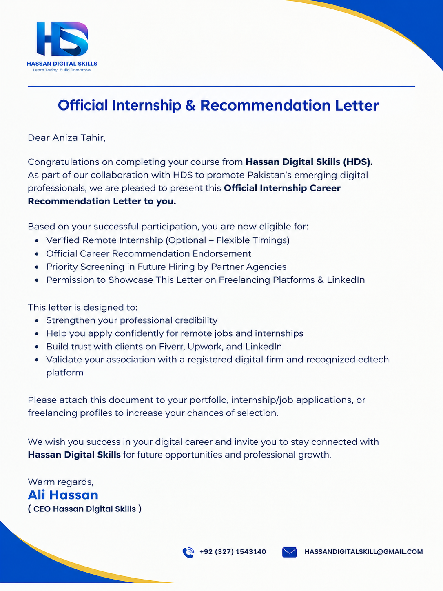

AI & Digital Skills
AI is presented here as a supporting professional skill within a broader content-writing practice.
AI Mastery
Practical understanding of AI tools, prompting, content workflows, and digital productivity developed through structured training.
AI-Assisted Content Workflow
Use AI to support exploration and drafting while keeping accuracy, relevance, originality, and final decisions human-led.
Digital Content Creation
Creating and organizing content for digital platforms and professional personal-brand communication.
Content Research Support
Using tools to support research and content exploration without treating generated material as automatically final.
Editing & Refinement
Reviewing content for clarity, relevance, accuracy, and reader usefulness.
Hassan Digital Skills AI Mastery
Completed AI Mastery training through Hassan Digital Skills, followed by an internship focused on applying AI and digital skills in practical work.
The experience developed my practical understanding of AI-assisted workflows, prompting, content creation, and digital productivity.

Official Internship & Recommendation Letter
Official internship and career recommendation letter issued by Hassan Digital Skills, recognizing my participation and experience during the program.
